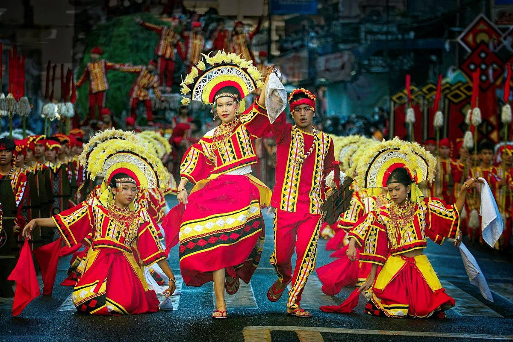
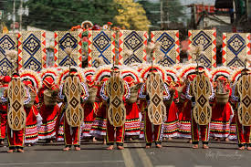
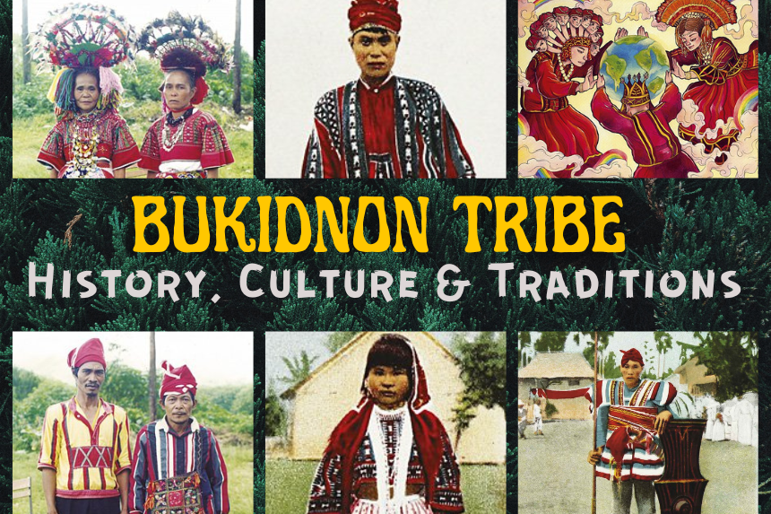

REPUBLIC OF THE PHILIPPINES
REPUBLIC OF THE PHILIPPINES
The Hinabol weaving reflects a sacred connection to the forest. Hand-woven from choice abaca fibers, each unique pattern tells a dynamic story of tribal identity, emotional journeys, and ancestral lineage.
Melodies brought to life through the Pulala (bamboo flute), Kutyapi (two-stringed boat lute), and sacred agongs. These are implemented strictly in divine tribal rituals, epic chanting accounts, and oral community storytelling.

Malaybalay City
Feb – April
Meaning: Derived from "amul" (to gather).
Scope: Grand provincial-wide gathering across 20 municipalities.
Tradition: Honors the 7 original hill tribes through genuine ancestral rituals, ethnic peace pacts, and sacred ground thanksgiving dances.

Maramag, Bukidnon
June – July
Meaning: Named after Lake Pinamaloy.
Scope: Local municipal-level celebration.
Tradition: Commemorates Maramag's regular foundation. Celebrates "Spring Resort Tourism" by blending rich local folklore dances with lively modern fiesta competitions.
Kaamulan is highly sacred because it represents the unified convergence of the 7 self-governing indigenous groups of Bukidnon:
Key Highlights: The Pangampo (prayer ritual), Syno-on (historical dance narrative), and the traditional street dancing where performers wear authentic hand-woven ethnic wear with heirloom brass ornaments.
Unlike the provincial-wide nature of Kaamulan, Pinamaloy focuses exclusively on the heritage of Maramag. It immortalizes the legend of the mystical, shape-shifting eel of Lake Pinamaloy and the bounty of Maramag's freshwater springs.
Key Highlights: Agro-industrial fairs showcasing high-yield upland produce, lake-centered environmental programs, municipal dance showdowns, and modern civic parades.
Because these traditions represent living cultures rather than staged theater acts, visitors are legally and culturally expected to observe deep reverence.
Bukidnon remains a bastion of pre-colonial cultural identity in Mindanao. While festivals like Pinamaloy look toward the modern economic expansion and ecological tourism of Maramag, Kaamulan remains anchored to the unyielding protection of ancestral domain, customary laws, and cultural integrity.
The arts in Bukidnon are a living extension of the community's faith and history. From the intricate beadwork of the Manobo to the globally acclaimed soil paintings of the Talaandig, every piece of art serves as a functional, spiritual bridge to the ancestors.
Local cooperatives and tribal elders work together to ensure that these skills—weaving, wood carving, epic chanting, and ritual execution—are passed down intact to younger generations, keeping the authentic Bukidnon spirit alive amidst a globalizing world.
